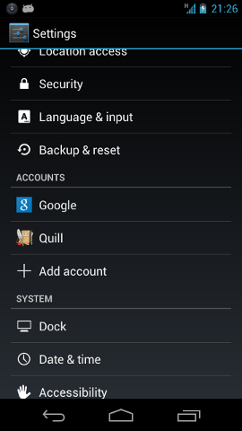
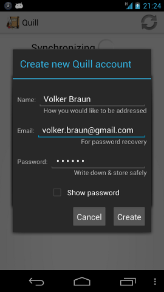

Explanation of Requested PermissionsI'm of course trying to use the minimal amount of permissions, but not at the expense of safety or user friendliness. Having said that, here is the list of permissions that the Quill APK requests in order to function. Full Internet Access
This permission is required to sync your notebook online, if you chose to. Note that nothing is sent or received over the internet unless you create a Quill account. Act as an Account Authenticator
This permission allows Quill to create and display an account in the Android preferences. Also, allows Quill to get/set the password for Quill's own account  The market description is a bit terse, but note that the their in getting and setting their passwords refers to the account that the app created. There is no permission in Android that would allow an app to access other app's passwords. Read Contact Data
This permission is used to read your own profile, so you do not have to type your own name and email if you want to create a Quill account. Note that your profile information is only used to provide defaults for your name and email when creating an account, and you can change them arbitrarily before creating an account:  Unfortunately there is no finer-grained permission to only let an app access your own profile but not other contacts. Hopefully this will be introduced in a future Android version. If you want to verify for yourself that Quill only queries your own profile data, you can look into UserProfileICS.java in the Quill sources: private void initialize(Activity activity) {
ContentResolver cr = activity.getContentResolver();
Uri profile_uri = Uri.withAppendedPath(
ContactsContract.Profile.CONTENT_URI,
ContactsContract.Contacts.Data.CONTENT_DIRECTORY);
Cursor cursor;
cursor = cr.query(profile_uri, QueryEmail.PROJECTION,
QueryEmail.SELECTION, QueryEmail.ARGS, null);Quill queries ContactsContract.Profile.CONTENT_URI, so only the user's own profile information is returned. Modify/Delete USB Storage Contents, Modify/Delete SD Card Contents
This is required in order to save backups and/or PNG/PDF exported files. |